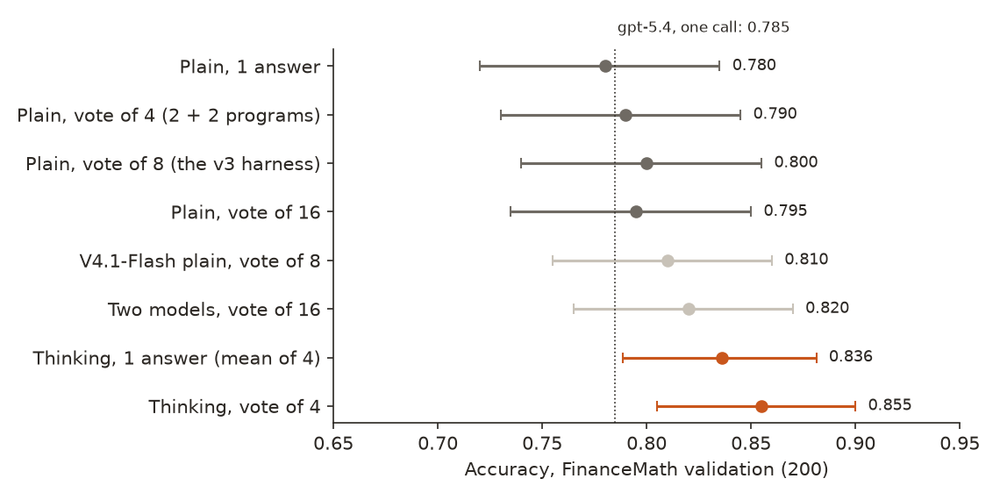
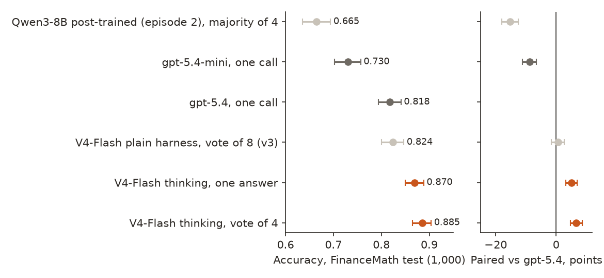
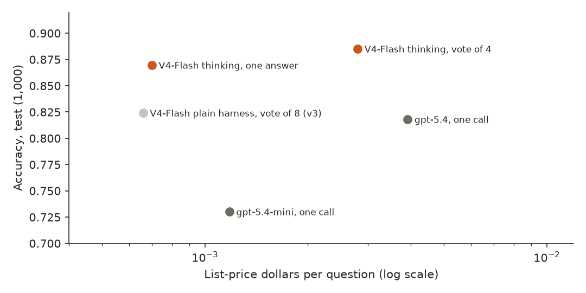

← Research·Experiments·
FinanceMath v2: open-weight SOTA: an open model in a harness beats gpt-5.4 and comes close to Claude Opus 5.5
The last episode ended level with gpt-5.4: an open model in a harness, 0.824 against 0.818. This one asks what it takes to pass it, tries more votes, a second model and a reasoning mode on the validation questions, and takes one pre-registered look at the test.
Previous: FinanceMath: an open model in a harness matches gpt-5.4.

Summary: the short answer and the key results
In short
Can an open-weight model beat gpt-5.4 on FinanceMath, a test of college-level finance calculations?
Yes. DeepSeek-V4-Flash, an open-weight model under the MIT licence, run in its thinking mode (it reasons before it answers) four times per question with a majority vote, scores 0.885 on the 1,000 held-out FinanceMath test questions. gpt-5.4, as run on Nov 10 (one call at the API’s default reasoning effort, which is none), scores 0.818. Paired on the same questions the gap is +6.7 points [+4.7, +8.7], which beats gpt-5.4 as run, by the rule written before the test was run, on a test set whose answers were public before this model’s release; gpt-5.4 at a higher reasoning effort, or in the same vote of 4, was not tested. A single thinking answer also beats it (0.870, +5.1 [+3.3, +7.0]). The four calls cost $0.0028 a question at list price, against $0.0039 for gpt-5.4’s one. On the validation questions, adding votes to the model’s plain answers had stopped helping at 0.80; thinking mode was the one change that moved it. This was the second look at this test set and OpenRouter rotated the serving company between calls. FinanceMath released its test answers on Jul 14, 2026 and this snapshot came out on Jul 31, so it may have trained on them; gpt-5.4’s training data ends Aug 31, 2025, before the release. The April checkpoint of the same model, released before the answers, scores 0.869 with the same system: 1.6 points below the 0731 snapshot [−3.1, −0.1], and still 5.1 points above gpt-5.4 as run [+3.2, +7.1]. So the result does not depend on leakage, though leakage, or simply a better post-train, may explain the 1.6 points (section 4.6). Claude Opus 5.5 at high reasoning effort, one call per question, scores 0.892 on a fixed random 250 of the test questions, against 0.860 for our vote of 4 on the same questions (−3.2 [−6.4, 0.0], a tie by the pre-set rule, at its edge) and 0.828 for gpt-5.4 (section 4.7).
Key results
| What we tested | Result | Compared with |
|---|---|---|
| Does the pre-registered open system beat gpt-5.4? (1,000 test questions, one final answer per question) | Yes: DeepSeek-V4-Flash thinking, vote of 4, 0.885 [0.865, 0.904]; +6.7 points [+4.7, +8.7] paired | gpt-5.4 as run (one call, default reasoning effort, Nov 10), 0.818 [0.794, 0.841]; not tested at higher effort |
| Without the vote? (one thinking answer, the mean of the 4) | Still ahead: 0.870 [0.850, 0.888]; +5.1 [+3.3, +7.0] | The same one call per question as gpt-5.4 |
| At what price? | Less per question: $0.0028 for 4 thinking calls; $0.0007 for one | gpt-5.4 $0.0039 per call; gpt-5.4-mini $0.0012 (0.730) |
| Do more votes on plain answers get there? (200 validation questions) | No: votes of 1, 4, 8 and 16 score 0.780, 0.790, 0.800 and 0.795; a second model in the vote, 0.820 | Thinking mode, vote of 4: 0.855 [0.805, 0.900] |
| Against episode 2’s best open system (the plain harness, vote of 8)? | +6.1 points [+4.2, +8.0] on test: 81 questions fixed, 20 broken | 0.824, the same model without thinking, plus programs |
| Is the test gain an artefact (an easier test, one provider, contamination)? | Not one we could find: every system scores about 3 points higher on test than on validation (gpt-5.4 +3.3, plain +2.4, thinking +3.0); the six main providers score 0.848 to 0.890 | Contamination cannot be ruled out: the test answers were released Jul 14, 2026, the snapshot Jul 31 (section 4.6) |
| Without any chance of leakage? (the April checkpoint, released before the test answers; same system, 1,000 questions) | Still beats gpt-5.4 as run: 0.869 [0.848, 0.889], +5.1 [+3.2, +7.1] | 1.6 points below the 0731 snapshot [−3.1, −0.1] |
| Against Claude Opus 5.5 at high reasoning effort? (one call per question, a fixed random 250 test questions) | Opus is ahead: 0.892 [0.852, 0.928]; our vote of 4 0.860, −3.2 [−6.4, 0.0] (tie, at the edge); one answer −5.4 [−8.7, −2.1] | gpt-5.4 as run on the same 250: 0.828, −6.4 [−10.8, −2.4] vs Opus |
01Introduction
A 30-year mortgage of $150,000 has a 9.0% mortgage rate and a 0.5% servicing fee; what is the monthly payment? The servicing fee is paid out of the 9%, so the answer is the payment at 9%: $1,206.93. gpt-5.4 answers $1,260.43, close to the payment at 9.5% ($1,261.28), as if it had added the fee to the rate. DeepSeek-V4-Flash in its plain mode, in last episode’s harness, got it right in one of its four written answers and none of its four programs, and the vote went wrong. The same model in thinking mode, which writes out its reasoning before it answers, gets $1,206.93 four times out of four. This note is about that switch.
What is known. Episode 2 (FinanceMath: an open model in a harness matches gpt-5.4) found that post-training an 8B model left it 20 points behind gpt-5.4 on the FinanceMath test (Zhao et al., 2024), and that an untrained open model, DeepSeek-V4-Flash, in a harness of four reasoning answers and four executed programs with a majority vote, reached it: 0.824 against 0.818, a paired gap of +0.6 points [−1.5, +2.7]. Sampling several answers and voting (self-consistency; Wang et al., 2022) and letting a model reason at length before answering (DeepSeek-AI, 2025) are the two standard ways to spend more compute at answer time.
What is missing. Reaching is not beating. Which of the cheap levers (more votes, a second model, a reasoning mode) closes the rest of the gap, and whether the result survives a held-out test at a price below gpt-5.4’s, was untested.
Can an open-weight system, chosen on the 200 validation questions only, beat gpt-5.4 on the 1,000 FinanceMath test questions, by a paired interval that excludes zero?
What this note does. Its contributions:
- A comparison of answer-time levers on one open model, on the same validation questions: more votes, a second model, and thinking mode.
- One pre-registered test look: the chosen system beats gpt-5.4 by 6.7 points [+4.7, +8.7], and one thinking answer beats it by 5.1.
- The price per question beside every score, and checks of the boring explanations: an easier test, the rotating serving providers, and answers cut off at the token limit.
- Every graded sample, with the provider that served it.
What would count as an answer. Written in the pre-registration before the test was run:
- Every choice is made on the 200 validation questions; the chosen system runs once on the test.
- Beats means the paired 95% interval against gpt-5.4 on the same 1,000 questions excludes zero above; reaches means it contains zero; below means it excludes zero below.
- The comparison discloses that our system makes four calls per question against gpt-5.4’s one, reports the one-answer score beside the vote, and gives the price of each.
02Setup
2.1 Answer-time levers, for software engineers
- A vote asks the same question several times at a temperature above zero and takes the most common answer. It is like asking four colleagues and going with the majority: it fixes slips that happen in a few of the answers, not a method all of them get wrong. Two answers count as the same when the official grader would call them equal (4.3% and 0.043 are one answer).
- The harness from episode 2 adds programs to the vote: the model also writes a Python
solution(), shown three solved problems from our own synthetic set, and we run the code in an isolated process. - Thinking mode lets the model write its working before its answer, in a separate reasoning text that the provider returns but the grader ignores. Here it is DeepSeek-V4-Flash’s own reasoning switch (OpenRouter’s
reasoning: {"effort": "high"}). It costs tokens: 2,289 per answer on the test, against 270 in plain mode. - A cross-model vote pools answers from two models (here V4-Flash and V4.1-Flash), in case their mistakes differ.
2.2 Benchmark and grader
FinanceMath questions are short exam problems across seven areas, from accounting to derivatives, many with a table, each with an expert-written Python solution. The grader is episode 2’s port of the official comparison: a numeric answer is right within 0.15% of the gold, after a power-of-ten rescale (4.3% matches 0.043), or when it matches the reference solution’s unrounded value. It reads the answer from a final ANSWER: line and marks 100% of the gold answers right (test_fm_grader.py). The prompt is the same as in episode 2, for every model.
2.3 Data: what each set was used for
| Set | What it is | Size | Used for |
|---|---|---|---|
| FinanceMath validation | The benchmark’s validation split | 200 | Every choice: levers, the system, its settings |
| A fixed random 50 of validation | The first test of thinking mode, before spending on all 200 | 50 | Deciding whether to run thinking mode on all 200 |
| Our synthetic problems | Episode 2’s 2,714 verified problems with Python solutions | 2,714 | The three worked examples shown with each program (never benchmark text) |
| FinanceMath test | The benchmark’s test split, gold public since July 2026; looked at by episode 2’s 8B runs and once by its harness (look 1) | 1,000 | One run of the chosen system (look 2) |
2.4 Models and providers
DeepSeek-V4-Flash is a mixture-of-experts model with 284 billion parameters, 13 billion active per token (OpenRouter’s model page), with open weights under the MIT licence; “open” here means the weights and a licence that allows reuse, not a model that runs on a laptop. Every call named the pinned snapshot deepseek/deepseek-v4-flash-0731 on OpenRouter, at $0.043 per million input tokens and $0.30 per million output tokens, at temperature 0.6, top_p 0.95 and up to 16,384 output tokens, settings carried over from episode 2 and frozen on validation. They are not the 0731 card’s recommendation, which is temperature 1.0 and, at high effort, up to 384K output tokens (model card); the snapshot was released on Jul 31, 2026, and the card gives no training-data cutoff. OpenRouter picks the serving company for each call; we recorded it for every sample (section 4.5). The validation screen started on Hugging Face’s inference router and moved to OpenRouter when that account ran out of credit; an OpenRouter rerun of episode 2’s harness gave the same 0.800 as Hugging Face (paired 0.0 [−3.0, +3.0]). The rivals are episode 2’s runs of gpt-5.4 and gpt-5.4-mini, not re-run. Their exact settings: model ids gpt-5.4 and gpt-5.4-mini through OpenAI’s Chat Completions API on Nov 10, 2026; one call per question with the same prompt; no reasoning_effort parameter sent, so the API’s default applied, which OpenAI’s model pages list as none for both (gpt-5.4, gpt-5.4-mini; default snapshots gpt-5.4-2026-03-05 and gpt-5.4-mini-2026-03-17, knowledge cutoff Aug 31, 2025); temperature left at the API default; max_completion_tokens 2,048. gpt-5.4 used 203 output tokens per question at the median, reasoning included, and gpt-5.4-mini 213; none of their answers reached the limit. So both ran without reasoning, while the open model’s thinking answers averaged 2,289 tokens: this compares a thinking open model with non-thinking GPT calls, and gpt-5.4 at a higher reasoning effort may close or reverse the gap. gpt-5.4 at a higher reasoning effort, or in the same vote of 4, was not tested (it needs OpenAI credit we did not spend), so every comparison here is with gpt-5.4 as run.
03How the study was run
- Goal, in writing: beat gpt-5.4’s 0.818 on the test, on validation choices only, without training (the trainable models were 9 points short in episode 2).
- Error analysis of episode 2’s harness on its 40 validation misses: 25 used the wrong method, 9 were within 1% of the gold and 6 were close. On 17 of the 40 the eight answers nearly all agreed on the wrong value, so more votes could not fix them.
- Screen on Hugging Face (stopped when its credit ran out): partial 4 + 4 samples on V4-Flash thinking (53 questions), V4.1-Flash thinking (71), V4-Pro plain (125) and Kimi-K2.5 (16). Thinking mode led on the questions it covered.
- Re-baseline on OpenRouter: the episode 2 harness, 200 × (4 + 4): 0.800, the same as before.
- More votes and a second model (plain mode): V4-Flash to 8 + 8 samples, V4.1-Flash 4 + 4, every vote size and the cross-model vote counted from the same samples (Figure 1).
- Thinking mode on a fixed random 50: 4 reasoning answers and 4 programs. Thinking vote 0.840 against plain 0.760 on the same 50; programs added nothing to the thinking answers, so they were dropped.
- Thinking mode on all 200, reasoning answers only, 4 per question: vote of 4 0.855 [0.805, 0.900].
- Pre-registration committed (selection rule, frozen settings, beats / reaches / below, the disclosures), then the test look: 4,000 graded answers, 0 failed calls.
| Fixed before the test look | Changed after reading validation results |
|---|---|
| The selection rule (the highest validation accuracy of a single final answer per question); the pinned snapshot, temperature 0.6, top_p 0.95, 16,384-token cap, the prompt and the grader; vote grouping by the official equality rule, ties to the first group formed; beats / reaches / below on the paired interval; the gpt-5.4 comparison run; a $6 spending cap | The route moved from Hugging Face to OpenRouter when Hugging Face credit ran out (the re-baseline matched). The other candidates (V4-Pro, Kimi-K2.5, V4.1-Flash thinking) were not finished, for cost. Programs were dropped from the thinking system after the 50-question check showed they added nothing. No size of gain was set in advance. |
Conditions: samples drawn at temperature 0.6, streamed, through OpenRouter; providers rotated by OpenRouter and recorded. Spend for this episode: $9.42 at list prices (Hugging Face screen $5.11, OpenRouter validation $1.52, the test look $2.79).
04Results
Seven findings:
- 4.1 More votes on plain answers stop helping at 0.80; thinking mode is the lever.
- 4.2 On the test, the thinking vote beats gpt-5.4 by 6.7 points, and one thinking answer by 5.1.
- 4.3 It costs less per question than gpt-5.4.
- 4.4 It is ahead in all seven topic areas, most in derivatives.
- 4.5 The boring explanations (an easier test, a lucky provider, cut-off answers) do not account for it.
- 4.6 The model may have seen the test answers; a checkpoint released before them scores 1.6 points lower and still beats gpt-5.4 as run.
- 4.7 Claude Opus 5.5 at high reasoning effort is ahead of both, on a 250-question subset.
4.1 More votes on plain answers stop helping at 0.80; thinking mode is the lever
On the 200 validation questions, plain-mode votes of 1, 4, 8 and 16 answers score 0.780, 0.790, 0.800 and 0.795; adding a second model (V4.1-Flash) to the vote gives 0.820. Thinking mode gives 0.836 for a single answer and 0.855 [0.805, 0.900] for a vote of 4 (Figure 1). Against episode 2’s harness on the same questions, the thinking vote is +5.5 points [+1.5, +10.0]: it fixed 15 of the harness’s 40 misses and broke 4 of its right answers.
The flat vote curve is what the error analysis predicted. A vote fixes the questions where a few answers slip; on 17 of the harness’s 40 misses nearly every answer agreed on the same wrong value, and more copies of the same mistake cannot outvote it. Thinking mode is a different lever: it changes the answers themselves, not how they are counted.

4.2 On the test, the thinking vote beats gpt-5.4 by 6.7 points, and one thinking answer by 5.1
On the 1,000 test questions, DeepSeek-V4-Flash thinking with a vote of 4 scores 0.885 [0.865, 0.904]. gpt-5.4 scores 0.818. Paired on the same questions the difference is +6.7 points [+4.7, +8.7]: the interval excludes zero above, so by the pre-registered rule it beats gpt-5.4 as run. It is right on 90 questions gpt-5.4 gets wrong and wrong on 23 that gpt-5.4 gets right. One thinking answer per question, the like-for-like comparison with gpt-5.4’s one call, scores 0.870 and also beats it: +5.1 [+3.3, +7.0] (Figure 2).
| System (1,000 test questions) | Calls per question | Accuracy | Paired vs gpt-5.4 (points) | $ per question |
|---|---|---|---|---|
| DeepSeek-V4-Flash thinking, vote of 4 (the pre-registered system) | 4 | 0.885 [0.865, 0.904] | +6.7 [+4.7, +8.7] | 0.0028 |
| DeepSeek-V4-Flash thinking, one answer (mean of 4) | 1 | 0.870 [0.850, 0.888] | +5.1 [+3.3, +7.0] | 0.0007 |
| Episode 2: V4-Flash plain harness, vote of 8 (test look 1) | 8 | 0.824 [0.800, 0.847] | +0.6 [−1.5, +2.7] | 0.0007 |
| gpt-5.4 as run (default reasoning effort: none) | 1 | 0.818 [0.794, 0.841] | — | 0.0039 |
| gpt-5.4-mini as run (default reasoning effort: none) | 1 | 0.730 [0.702, 0.757] | −8.8 [−11.1, −6.6] | 0.0012 |
| Episode 2: Qwen3-8B post-trained, majority of 4 | 4 | 0.665 [0.635, 0.694] | −15.3 [−18.0, −12.6] | — |
The pre-registered secondary comparisons, all paired on the test: the thinking vote is 15.5 points [+13.0, +18.1] above gpt-5.4-mini, 6.1 [+4.2, +8.0] above episode 2’s harness (81 questions fixed, 20 broken), and 26.4 [+24.0, +28.7] above the post-trained 8B model’s per-sample accuracy (0.622). On 815 questions all four thinking answers were right, on 96 all four were wrong, and on 89 they split, which is where the vote earns its 1.5 points over a single answer.

4.3 It costs less per question than gpt-5.4
The four thinking calls cost $0.0028 a question at the listed price, against $0.0039 for one gpt-5.4 call; one thinking answer costs $0.0007, less than gpt-5.4-mini’s $0.0012 (Figure 3). The whole test look, 4,000 answers, cost $2.79. Thinking is what costs: 2,289 output tokens per answer on average (median 817; one in ten over 6,828), against 270 in plain mode, so one thinking answer costs about as much as the eight plain calls of episode 2’s harness. The per-token price is what keeps it cheap: $0.30 per million output tokens.

4.4 It is ahead in all seven topic areas, most in derivatives
The thinking vote is ahead of gpt-5.4 in every one of FinanceMath’s seven areas, by 2.3 points in accounting and by 11.2 in asset classes and derivatives, the largest area. The areas are small, so only the overall interval is a test; the table shows that the gain is not one area’s.
| Area (test) | Questions | V4-Flash thinking, vote of 4 | gpt-5.4 |
|---|---|---|---|
| Asset classes and derivatives | 303 | 0.884 | 0.772 |
| Accounting | 219 | 0.900 | 0.877 |
| Quantitative analysis and valuation | 205 | 0.902 | 0.859 |
| Market analysis and economics | 109 | 0.844 | 0.789 |
| Portfolio management and strategy | 72 | 0.861 | 0.806 |
| Risk management | 56 | 0.839 | 0.768 |
| Corporate and securities issuance | 36 | 0.944 | 0.806 |
The questions it gains look like the mortgage one, where a single convention decides the number: a bond’s DV01 (gold 0.062; gpt-5.4 0.0645; thinking 0.0619 four times), an after-tax cost of debt from a bond’s price (gold 4.277%; gpt-5.4 4.32%; thinking 4.276 to 4.28), a duration gap (gold 2.216; gpt-5.4 −1.872; thinking 2.2156 four times). On all three, episode 2’s plain harness also voted wrong.
4.5 The boring explanations do not account for it
- An easier test. Every system scores higher on the test than on validation, by about the same amount: gpt-5.4 by 3.3 points (0.785 to 0.818), episode 2’s plain harness by 2.4 (0.800 to 0.824), the thinking vote by 3.0 (0.855 to 0.885). The gap to gpt-5.4 is 7.0 points on validation [+3.0, +11.5] and 6.7 on test.
- A lucky provider. OpenRouter sent the 4,000 calls to eleven companies. The six that served 435 or more answers each score 0.848 to 0.890 per answer (Relace 1,299 answers, 0.868; DeepInfra 611, 0.890; Wafer 607, 0.878; Cohere 560, 0.859; Venice 437, 0.876; CoreWeave 435, 0.848). No provider carries the result.
- Cut-off answers. 56 of the 4,000 answers (1.4%) hit the 16,384-token limit, and all 56 were graded wrong; the cap costs the system, it does not help it.
- A failed run. All 4,000 calls returned an answer; none was redrawn.
4.6 Could the model have seen the answers? A checkpoint that could not still beats gpt-5.4 as run
Possibly, and this note cannot rule it out. FinanceMath kept its test answers private for nearly three years; its authors published them on Jul 14, 2026 (commit “Release test set ground truth”, which added data/test.json with the solutions; the README notes the July 2026 release). DeepSeek-V4-Flash-0731 was released on Jul 31, 2026, 17 days later, and its model card gives no training-data cutoff. A model trained or re-post-trained after Jul 14 could have seen the answers.
- The validation-to-test pattern is consistent with leakage, but does not prove it. The thinking vote rose from 0.855 on validation to 0.885 on test, and the plain harness from 0.800 to 0.824. Validation answers have been public since 2024, so a test-only lift would be the sign to look for. But gpt-5.4, whose training data ends Aug 31, 2025 (OpenAI’s model page), before the answers were released, rose by as much: 0.785 to 0.818. The test looks easier for every system, which explains the lift without leakage and cannot exclude it.
- The same weights scored 0.824 in plain mode. Memorised answers would have to surface mainly when the model thinks; that is possible, since thinking can recall a worked solution, so it is weak evidence.
- gpt-5.4 could not have trained on them if its documented cutoff holds, so the comparison may favour the open model for this reason too.
The check: a checkpoint released before the answers. The April 2026 release of the same model (deepseek/deepseek-v4-flash, OpenRouter slug deepseek-v4-flash-20260423, created Apr 24, 2026) cannot have trained on answers published in July. It ran through the exact frozen system on all 1,000 test questions (4,000 answers, 0 failures), under a written pre-registration as a robustness check, not a new selection. It scores 0.869 [0.848, 0.889] with the vote of 4, 1.6 points below the 0731 snapshot [−3.1, −0.1], and 0.836 per answer (−3.3 [−4.5, −2.2]). Against gpt-5.4 as run it is +5.1 points [+3.2, +7.1]: it still beats it.
By the reading written before the run, a significant drop is consistent with leakage, or with the 0731 snapshot simply being a better post-train, and this check cannot tell the two apart. Either way the headline does not depend on leakage: a model that cannot have seen the answers beats gpt-5.4 as run by 5.1 points. One difference we noticed afterwards (not pre-registered): the April checkpoint thinks longer (3,216 tokens per answer against 2,289) and hits the 16,384-token limit on 163 of 4,000 answers against 56, all graded wrong. On answers that finished, the two score 0.872 and 0.882, so most of the per-answer gap is answers cut off at the limit.
4.7 Claude Opus 5.5 at high reasoning effort is ahead of both, on a 250-question subset
To see where a frontier model that reasons stands, Claude Opus 5.5 answered a fixed random 250 of the 1,000 test questions (drawn with a recorded seed before any call), at high reasoning effort, one call per question, with the same prompt, grader and 16,384-token limit, through OpenRouter (all 250 served by Claude Platform on AWS; none hit the limit; 530 output tokens per answer). The subset size is a budget choice; every comparison below is paired on the same 250 questions, under the pre-set beats / ties / below rule.
| System (the same 250 test questions) | Accuracy | Minus Opus (points) | Verdict |
|---|---|---|---|
| Claude Opus 5.5, reasoning effort high, one call | 0.892 [0.852, 0.928] | — | — |
| DeepSeek-V4-Flash thinking, vote of 4 (this note’s system) | 0.860 [0.816, 0.900] | −3.2 [−6.4, 0.0] | ties (the interval reaches zero) |
| DeepSeek-V4-Flash thinking, one answer | 0.838 [0.794, 0.879] | −5.4 [−8.7, −2.1] | below |
| gpt-5.4 as run (reasoning effort none) | 0.828 [0.780, 0.872] | −6.4 [−10.8, −2.4] | below |
Opus 5.5 is right on 13 questions our vote of 4 gets wrong, and wrong on 5 it gets right. Our system ties it only at the edge of the interval, and one of our answers is clearly below one of its answers. So the open model beats gpt-5.4 as run, not frontier models that reason: the gap this note closed was mostly reasoning, which Opus was given here and gpt-5.4 was not. Opus cost about $0.012 a question at list price, four times our vote of 4. Its answers are used for evaluation only, never as training data.
05Compared with published results
“Open-weight SOTA” in the title means the highest published FinanceMath test score by an open-weight system that we found, as of Nov 12, 2026. The published numbers below come from different graders (the FinanceMath paper reads answers with a language model; this note reads an ANSWER: line with the same numeric rule), and several are on the 200 validation questions rather than the 1,000 test questions, so the split is marked for each. Our test scores carry this note’s caveats: the test answers were public before the 0731 snapshot’s release (the April checkpoint, released before them, is in the table), and gpt-5.4 ran without reasoning.
| System | Weights | Split | Accuracy (%) | Source |
|---|---|---|---|---|
| Human experts (estimated) | — | test | 92 | Zhao et al., 2024 |
| GPT-4o, chain of thought (best in the FinanceMath paper) | closed | test (1,000) | 60.9 | Zhao et al., 2024 |
| Qwen3-235B with Formula-One prompting | open | not stated (scores in steps of 0.5, as on 200 questions) | 61 | SOTA2 leaderboard (“Formula-One Prompting”, 2026) |
| MoCA-Agent, Qwen3.6-27B backbone | open | validation (200) | 76.0 | Abdallah et al., 2026 |
| This note: DeepSeek-V4-Flash thinking, vote of 4 | open | validation (200) | 85.5 | section 4.1 |
| This note: DeepSeek-V4-Flash (0731) thinking, vote of 4 / one answer | open | test (1,000) | 88.5 / 87.0 | section 4.2 |
| This note: the April checkpoint (released before the test answers), same system | open | test (1,000) | 86.9 | section 4.6 |
| Episode 2: V4-Flash plain harness; gpt-5.4 as run (no reasoning); gpt-5.4-mini | open; closed; closed | test (1,000) | 82.4; 81.8; 73.0 | episode 2 |
| This note: Claude Opus 5.5, high reasoning effort | closed | test, random 250 | 89.2 | section 4.7 |
| Episode 2, update 2 | This episode | |
|---|---|---|
| Model | DeepSeek-V4-Flash, plain mode | The same weights, thinking mode |
| Answers per question | 4 reasoning + 4 executed programs | 4 reasoning |
| Test result against gpt-5.4 | Reaches: +0.6 [−1.5, +2.7] | Beats: +6.7 [+4.7, +8.7] |
| Price per question | $0.0007 | $0.0028 |
| Pre-registered single test look | ✓ (look 1) | ✓ (look 2) |
| Training | ✗ | ✗ |
06Implications for AI safety
The same open weights scored 0.824 in one mode and 0.885 in another, a larger difference than the one between them and gpt-5.4. A capability evaluation that runs an open model in its default mode, or caps its reasoning, can understate what anyone who downloads the weights can get from it, and a comparison of an open model with a closed one says as much about the settings as about the models. Here the stronger mode was one request parameter and cost less than a frontier call. The same caution runs the other way: gpt-5.4 was run at its default reasoning, so this note does not show the open model ahead of gpt-5.4 at its best.
Risk: very low. Public exam-style finance questions and a public model.
The recommendation in one sentence: report every model’s score with its reasoning mode, token budget and number of samples, and test an open model in its strongest mode before calling it weaker than a closed one.
07What this does not show
- That it beats gpt-5.4 at its best. gpt-5.4 ran once per question at the API’s default reasoning effort (episode 2’s runs, not re-run) and answered in a median of 203 tokens, against about 2,300 for each thinking answer here; it was not given a higher reasoning effort or a vote of 4, which may close or reverse the gap.
- A fresh test set. This is the second look at these 1,000 questions by this line of work (episode 2’s harness was look 1, and its 8B runs also used them). Every choice here was made on validation, but the decision to keep going was made after look 1.
- A clean model. The test answers were public 17 days before the snapshot’s release; the April checkpoint rules out that the result depends on it, not that the 0731 snapshot saw them (section 4.6).
- Opus on the full test. Claude Opus 5.5 answered 250 of the 1,000 questions, so its interval is wider than the others’ (section 4.7).
- One deployment. Answers came from eleven serving companies chosen by OpenRouter; among the main six, accuracy per answer ranged from 0.848 to 0.890, and a single provider could score differently.
- A small model. DeepSeek-V4-Flash is a mixture of experts with 284 billion parameters, 13 billion active.
- Other candidates fairly tested. V4-Pro, Kimi-K2.5 and V4.1-Flash thinking were screened only on part of validation before the Hugging Face credit ran out.
- The grader reads one line. An answer with the right number elsewhere is marked wrong. Prices are list prices from logged token counts, not invoices.
08Reproduce it
Recompute the test comparison, the figures and the cover from the saved results, in under a minute:
experiments/fin-math-v2/reproduce.sh --scoresRerun from scratch: FinanceMath in experiments/fin-math/data/raw/ (commands in fin-math/README.md) and an OpenRouter key (OPENROUTER_API_KEY). The OpenRouter part of this note cost $4.31 at list prices; the test look alone, $2.79:
experiments/fin-math-v2/reproduce.sh --dry-run # lists every command
experiments/fin-math-v2/reproduce.shSamples drawn at temperature 0.6 from rotating providers will not repeat exactly; expect a rerun to land within the intervals above. The pre-registration and the experiment log are in the repository’s plans.
09What’s next
None of these has been run yet. First, the comparisons this note could not make:
- A FinQA replication of the harness, on episode 1’s benchmark, to see whether thinking transfers to a second finance test.
- gpt-5.4 at high reasoning effort, one call per question on the same 1,000 questions.
- Claude Opus 5.5 on all 1,000 questions, not a 250-question subset.
Then the goal of this line: an open model we train ourselves (episode 2’s Qwen3-8B, 0.622 per answer on the test) that passes gpt-5.4:
- Turn on the student’s reasoning. Our Qwen3-8B runs were all in non-thinking mode; run the base and the post-trained model in thinking mode.
- A bigger student: Qwen3-32B or Qwen3-30B-A3B.
- Distil DeepSeek-V4-Flash’s verified thinking traces (open weights, MIT licence) into the student.
- More and harder training problems: the FinQA, TAT-QA and ConvFinQA training splits plus execution-verified synthetic problems, never FinanceMath test questions.
- GRPO with a numeric-correctness reward on hard problems, with room for long reasoning.
- This note’s harness on the fine-tuned model: thinking plus a vote of 4.
Next: back to episode 2, FinanceMath: an open model in a harness matches gpt-5.4, for the post-training runs and the harness this episode builds on.
10Questions and answers
Can an open-weight model beat GPT-5.4 on FinanceMath?
Yes, against gpt-5.4 as run: DeepSeek-V4-Flash in thinking mode, four answers and a majority vote, scores 0.885 on the 1,000 FinanceMath test questions against 0.818 for gpt-5.4 at its default reasoning effort (one call), +6.7 points [+4.7, +8.7] paired. gpt-5.4 at a higher effort was not tested; at its default it answered in a median of 203 tokens, at an effort of none, and a higher effort may close or reverse the gap. The test answers were also public before this model’s release (section 4.6). One thinking answer scores 0.870 (+5.1 [+3.3, +7.0]).
Is it better than Claude Opus 5.5?
No. On a fixed random 250 of the test questions, Claude Opus 5.5 at high reasoning effort, one call per question, scores 0.892 against 0.860 for our vote of 4 (−3.2 points [−6.4, 0.0], a tie by the pre-set rule, at its edge) and 0.838 for one of our answers (−5.4 [−8.7, −2.1], below).
What does DeepSeek-V4-Flash score on FinanceMath?
On the 1,000 test questions, 0.870 per thinking answer and 0.885 with a vote of 4; in plain mode with episode 2’s harness (4 reasoning answers and 4 executed programs), 0.824. On the 200 validation questions, 0.836 and 0.855 in thinking mode, 0.780 for one plain answer.
Does majority voting help on finance math?
A little, then not at all: on validation, plain-mode votes of 1, 4, 8 and 16 answers scored 0.780, 0.790, 0.800 and 0.795. Most remaining errors were a wrong method that every answer shared. Thinking mode added 5.5 points over the vote of 8.
How much does it cost per question?
$0.0028 for four thinking answers and $0.0007 for one, at OpenRouter’s list price for the pinned snapshot ($0.30 per million output tokens; 2,289 output tokens per answer). One gpt-5.4 call costs $0.0039 and one gpt-5.4-mini call $0.0012.
Is the comparison with GPT-5.4 fair?
Partly. Both were scored with the same prompt and grader on the same questions, and a single thinking answer also beats gpt-5.4 at one call each. But gpt-5.4 ran at its default reasoning (none: a median of 203 output tokens, against about 2,300 per thinking answer), not re-run at a higher setting, this was the second look at the test set, and the model’s snapshot came out 17 days after the test answers were released.
AAppendix: data
Every number comes from a file in experiments/fin-math/results/; README.md describes them.
runs/test__v4-or-dsflash-think-reason.jsonl: the test look, one line per sample: question id, the parsed value, right or not, output tokens, reasoning length in characters, whether it hit the token cap, and the serving provider.runs/validation__v4-or-dsflash-think-reason.jsonl: the same on validation.runs/validation__v4-<candidate>-<reason|program>.jsonl: the validation screen:or-dsflash-plainandor-ds41flash-plainon OpenRouter;dsflash-think,ds41flash-think,dspro-plainandkimi-k25on Hugging Face (partial).runs/validation-50__v4-or-dsflash-think-*: the 50-question thinking check.runs/test__v4-or-dsflash0424-think-reason.jsonl(the April checkpoint, 4 per question) andruns/test__v4-or-opus55-high-reason.jsonl(Claude Opus 5.5, one per question on the subset inv4_opus_subset.json): the same columns;v4_robust.json: their scores and paired comparisons.v4_test.json: the test look’s accuracy, paired comparisons, verdict, providers, tokens and dollars.v4_screen.json: the Hugging Face screen.- The rivals:
runs/test__gpt-5.4.jsonl,runs/test__gpt-5.4-mini.jsonl,runs/test__v3pot-deepseek-v4-flash.jsonl(episode 2’s harness),runs/test__p4-grpo-s10.jsonl(the post-trained 8B model).
The prompt
“Solve this finance problem.” then the tables if any, “Question: …”, “Reason step by step, then answer. Finish with one line ANSWER: <value>: a number only (no units or currency signs); a percentage may be written with a % sign. Keep at least 3 significant figures.” The program prompt (plain-mode screen only) is POT_PROMPT in fm_v3.py.
Techniques
| Answering | Thinking mode (reasoning effort high), 4 samples per question, temperature 0.6, top_p 0.95, up to 16,384 output tokens, streamed; majority vote over values grouped by the official equality rule, ties to the first group |
|---|---|
| Grading | The official FinanceMath comparison (0.15% relative, power-of-ten rescaling), also against the unrounded reference value; checked at 100% on the gold |
| Statistics | 95% percentile bootstrap over questions; paired differences over the same questions; beats / reaches / below set in advance |
Tech stack
| Models | DeepSeek-V4-Flash and V4.1-Flash through OpenRouter (OpenAI-compatible API) and Hugging Face’s inference router; gpt-5.4 and gpt-5.4-mini through the OpenAI API (episode 2) |
|---|---|
| Code | Python 3.11, the openai client, NumPy, scikit-learn (TF-IDF retrieval), matplotlib |
References
- Zhao et al. “FinanceMath: Knowledge-Intensive Math Reasoning in Finance Domains.” ACL 2024. arXiv:2311.09797; data at github.com/yale-nlp/FinanceMath.
- yale-nlp/FinanceMath, commit bdc2b6b, “Release test set ground truth”, Jul 14, 2026.
- DeepSeek. DeepSeek-V4-Flash-0731 model card (released Jul 31, 2026); OpenRouter model page.
- OpenAI. GPT-5.4 and GPT-5.4 mini model pages (default reasoning effort none; knowledge cutoff Aug 31, 2025).
- Abdallah et al. “MoCA-Agent: A Market-of-Claims Code Agent for Financial and Numerical Reasoning.” 2026. arXiv:2606.11537 (FinanceMath validation, 76.0).
- SOTA2 Research. Mathematical Reasoning on FinanceMath leaderboard (Qwen3-235B with Formula-One prompting, 61).
- Anthropic. Claude Opus 5.5 (
anthropic/claude-opus-5.5on OpenRouter), evaluated at reasoning effort high. - Wang et al. “Self-Consistency Improves Chain of Thought Reasoning in Language Models.” 2022. arXiv:2203.11171.
- DeepSeek-AI. “DeepSeek-R1: Incentivizing Reasoning Capability in LLMs via Reinforcement Learning.” 2025. arXiv:2501.12948.
- Episode 2: FinanceMath: an open model in a harness matches gpt-5.4 and beats gpt-5.4-mini.
- Episode 1: On FinQA, retrieved worked examples add 2 to 3 points to every API model; a calculator loop adds nothing.
How to cite
@misc{lie2026financemathv2,
author = {Albert Lie},
title = {FinanceMath v2: open-weight SOTA: an open model in a harness beats gpt-5.4 and comes close to Claude Opus 5.5},
year = {2026},
month = nov,
url = {https://albertlieyingadrian.github.io/steerlab/experiments/fin-math-v2/report/}
}